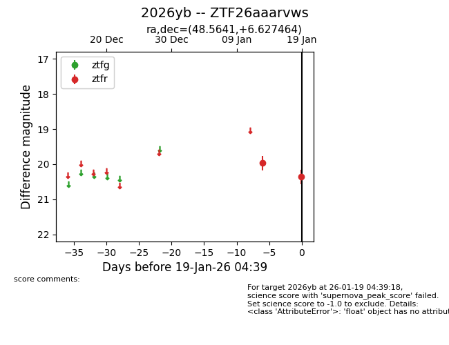
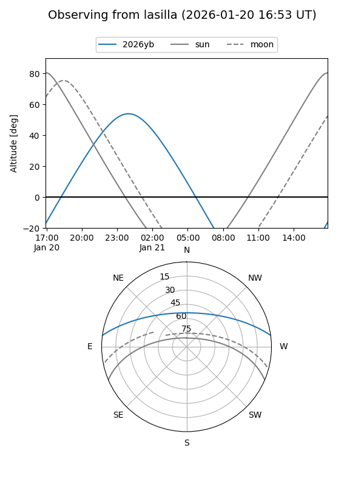
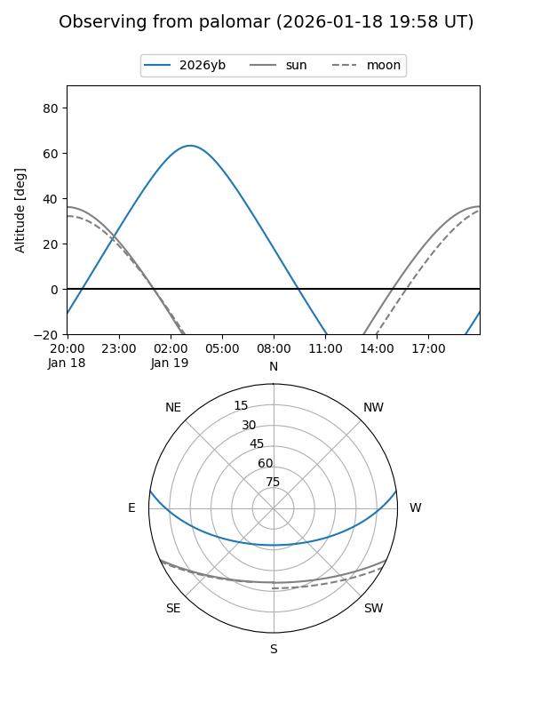

2026yb
Target 2026yb at 2026-01-19 04:40
Aliases and brokers:
FINK: link
Lasair: link
ALeRCE: link
TNS: link
YSE: link
alt names
ZTF26aaarvws (ztf,fink_ztf)
2026yb (tns,yse)
Coordinates:
equatorial (ra, dec) = 48.5641,+6.62746
equatorial (HMS+DMS) = 03:14:15.39,+06:37:38.87
galactic (l, b) = (173.8675,-41.70124)
Flags:
Photometry:
last ztfr=20.36
2 ztfr detections
Lightcurve

Visibility


Additional plots